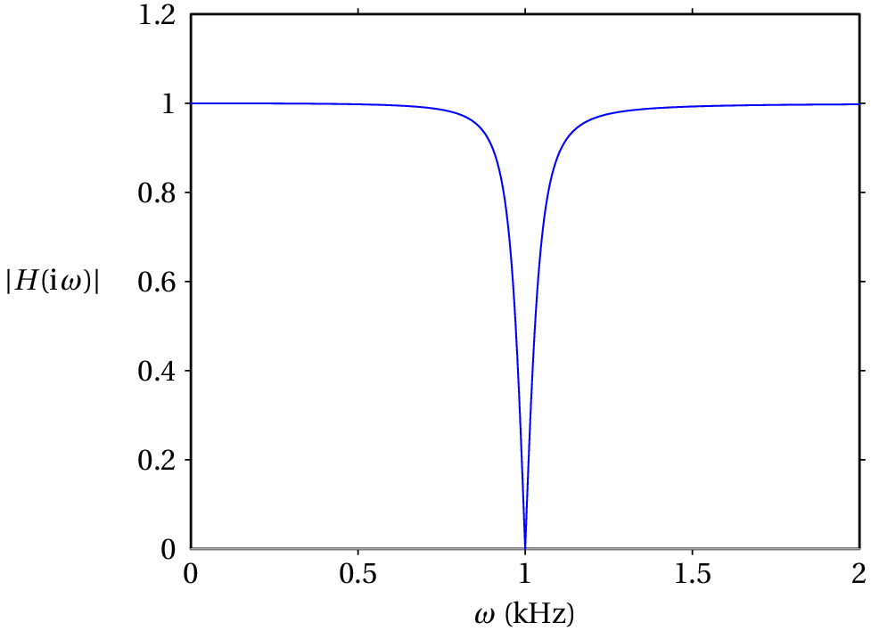

11. Circuitos de corrente alternada
Problema 2
A resistência de uma bobina é 150 Ω e a sua indutância é 1.4 H. A bobina é ligada à rede elétrica com tensão máxima 325 V e frequência de 50 Hz. Encontre a expressão para a corrente na bobina em função do tempo .
Usaremos unidades SI. A frequência angular da tensão e da corrente é
A bobina é considerada como uma resitência em série com um indutor. Como tal, a sua impedância é a soma das impedâncias da resistência e do indutor:
Admitindo que a tensão da rede elétrica em função do tempo seja , a voltagem máxima na bobina será 325~V, com fase = 0. A corrente máxima e o desfasamento da corrente na
E a expressão para a corrente é
Problema 6
Nos dois circuitos representados na figura, calcule a corrente e a tensão em todos os elementos do circuito.

(a) Usando unidades de kΩ para as impedâncias, H para as indutâncias, µF para as capacidades, V para as voltagens e kHz para as frequências, a frequência angular da fonte e as impedâncias dos 3 elementos no circuito são as seguintes:
(%o1)
(%i2) [z1,z2,z3]: float([3, 1/%i/w, %i*2*w])$
A voltagem no sistema da resistência em série com o condensador é igual à voltagem da fonte; como tal, o fasor da corrente através desses dois elementos é
(%i4) [cabs(I1), carg(I1)];
(%o4) [42.45, 0.724]
Ou seja, se for dado em ms, a expressão da corrente é:
As voltagens na resistência e no condensador são então
(%i6) [cabs(V1), carg(V1)];
(%o6) [127.4, 0.724]
(%i7) V2: z2*I1$
(%i8) float([cabs(V2), carg(V2)]);
(%o8) [112.6, -0.8468]
No indutor, a voltagem é a mesma voltagem da fonte:
e a corrente é
(%i10) [cabs(I3), carg(I3)];
(%o10)
(b) Segue-se exatamente o mesmo procedimento da alínea (a), mas com os novos valores de frequência e voltagem máxima da fonte e tendo em conta que agora é a impedância do condensador, a impedância do indutor e a impedância da resistência.
(%o11)
(%i12) [z3,z1,z2]: float([3, 1/%i/w, %i*2*w])$
(%i13) I1: 325/(z1+z2)$
(%i14) [cabs(I1), carg(I1)];
(%o14)
(%i15) V1: z1*I1$
(%i16) [cabs(V1), carg(V1)];
(%o16) [404.9, 0]
(%i17) V2: z2*I1$
(%i18) [cabs(V2), carg(V2)];
(%o18)
(%i19) I3: 325/z3$
(%i20) [cabs(I3), carg(I3)];
(%o20) [108.3, 0]
Como tal, a corrente e a voltagem no condensador são:
No indutor:
E na resistência:
Problema 7
A figura mostra um filtro rejeita-banda que atenua as frequências angulares próximas de 1 kHz. (a) Determine a função de resposta em frequência, , do circuito. (b) Mostre que para kHz, é igual a zero. (c) Calcule o módulo de e trace o seu gráfico para entre 0 e 2 kHz.

(a) Usando unidades de kΩ para as impedâncias, H para a indutância, µF para a capacidade e kHz para a frequência , as impedâncias do condensador, o indutor e a resistência são:
A impedância equivalente é igual a
E os fasores da corrente e da voltagem na resistência são então:
(%i24) V: I$
A função de resposta em frequência é,
(%o25)
Pode eliminar-se o fator comum no numerador e denominador, ficando:
(b) O valor da função de resposta em frequência, para kHz, é então,
(%o26)
(c) O módulo da função de resposta, , obtém-se usando a função cabs do Maxima:
(%o27)
O gráfico dessa função, entre 0 e 2 kHz, obtém-se com o seguinte comando:

Comentários: Observe-se que em quase tudo o intervalo de frequências é aproximadamente igual a 1, o que implica que o sinal de entrada não é atenuado. No entanto, em = 1 kHz, = 0, ou seja, o sinal de saída é nulo. É por essa razão que o filtro chama-se rejeita-banda; as frequências angulares próximas de uma frequência típica do filtro, neste caso 1 kHz, são eliminadas no sinal de saída.
Problema 10
A figura mostra o ecrã de um osciloscópio onde aparecem a tensão e a corrente num elemento de um circuito. As distâncias e foram medidas diretamente no ecrã, obtendo-se os valores = 6 cm, = 1 cm. O osciloscópio também permite determinar que a tensão máxima é = 36 V e a corrente máxima é = 12 mA. Com esses dados, calcule a parte real e a parte imaginária da impedância do elemento do circuito.

O ângulo da impedância é igual à constante de fase da tensão menos a constante de fase da corrente:
O gráfico mostra que a tensão está adiantada em relação à corrente ( passa pelo seu valor máximo ou mínimo um pouco antes que ); a diferença das fases, , é então positiva e corresponde à distância no gráfico. Como a distância corresponde a um ângulo de , então a o ângulo da impedância é:
O módulo da impedância é, em kΩ, é igual à tensão máxima em volts dividida pela corrente máxima em miliampere.
A impedância, em kΩ, é o número complexo:
E as partes real e imaginária da impedância são: